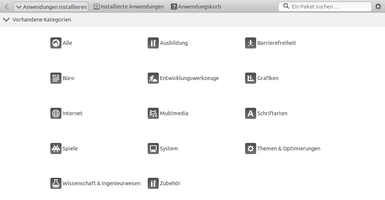

Lubuntu Software Center
Dieser Artikel wurde für die folgenden Ubuntu-Versionen getestet:
Ubuntu 16.04 Xenial Xerus
Ubuntu 14.04 Trusty Tahr
Zum Verständnis dieses Artikels sind folgende Seiten hilfreich:
Das ab Lubuntu 12.04 vorhandene Lubuntu Software Center  (LSC) ist eine ressourcenschonende Alternative zum Software-Center von Ubuntu. Letzteres kann auf leistungsschwachen Rechnern recht träge reagieren. Das LSC ist nicht auf Lubuntu beschränkt, sondern kann auch mit anderen Ubuntu-Varianten wie z.B. Xubuntu eingesetzt werden.
(LSC) ist eine ressourcenschonende Alternative zum Software-Center von Ubuntu. Letzteres kann auf leistungsschwachen Rechnern recht träge reagieren. Das LSC ist nicht auf Lubuntu beschränkt, sondern kann auch mit anderen Ubuntu-Varianten wie z.B. Xubuntu eingesetzt werden.
Es ermöglicht die Suche nach Paketen in den Ubuntu-Paketquellen sowie die Installation und Deinstallation von Paketen. Zu Installation und Deinstallation sind Root-Rechte [1] erforderlich. Das Programm kann aber auch ohne Root-Rechte genutzt werden, um Informationen über die installierten Pakete zu erhalten. Im Gegensatz zu seinem großem Bruder enthält das LSC keine kommerziellen Angebote oder Werbung für diese.
|  |
| LSC bei Lubuntu 14.04 |
| Programmsuche |
Installation¶
Bei Lubuntu ist es vorinstalliert, ansonsten kann es bei Bedarf über das folgende Paket nachinstalliert [2] werden:
lubuntu-software-center (universe)
 mit apturl
mit apturl
Paketliste zum Kopieren:
sudo apt-get install lubuntu-software-center
sudo aptitude install lubuntu-software-center
Verwendung¶
Der Programmstart erfolgt entweder über den Eintrag "Systemwerkzeuge -> Lubuntu Software-Center" im Anwendungsmenü oder durch den Befehl lubuntu-software-center [3].
Das LSC wird primär über drei Schaltflächen in der oberen Leiste bedient. Dabei gilt folgende Reihenfolge:
Programm oder Paket suchen
zur Installation vormerken
Installation durchführen
| LSC bei Ubuntu 12.04 |
"Anwendungen installieren" - die Programmauswahl erfolgt nach Kategorien oder mit Hilfe einer Suchfunktion. Wenn das Programmfenster ausreichend groß ist bzw. maximiert wird, wird in der Werkzeugleiste ein Suchfeld sichtbar (beim Öffnen standardmäßig verborgen). Dort eingegebene Suchbegriffe werden sofort gesucht, ein Bestätigen mit der Eingabetaste ⏎ ist nicht notwendig. Die Suche kann durch die vorherige Wahl einer Kategorie eingeschränkt werden. Wird eine Anwendung via Doppelklick ausgewählt oder die Schaltfläche "Informationen" benutzt, sieht man eine Programmbeschreibung und ein Bild des Programms (letzteres nur, wenn eine Internetverbindung besteht). Mit der Schaltfläche "Zum Anwendungskorb hinzufügen" wird das Programm zur Installation vorgemerkt. Möchte man weitere Programme auswählen, hilft das Pfeilsymbol vorne links in der Symbolleiste weiter.
"Installierte Anwendungen" - als Informationsquelle oder zur Deinstallation. Die Navigation erfolgt wie bei "Anwendungen installieren" beschrieben. Auch hier kann die Suchfunktion verwendet werden. Möchte man ein Programm deinstallieren, erfolgt dies über die Schaltfläche "Vom System entfernen".
"Anwendungskorb" - Liste ausgewählter, aber noch nicht installierter Programme inklusive ihrer abhängigen Pakete. Die Schaltfläche "Verwerfen" entfernt alle ausgewählten Programme wieder, eine selektive Auswahl (einzelner Programme) ist nicht möglich. Erst nach Bestätigung mit der Schaltfläche "Pakete installieren" wird die eigentliche Installation durchgeführt.
Einstellungen¶
Über ein Symbol (Zahnrad oder Pfeil) am rechten Ende der oberen Symbolleiste gelangt man zu den Einstellungen. Die wichtigste ist die Wahl des Expertenmodus, in dem nicht die Programmnamen und -symbole angezeigt werden, sondern die Paketnamen. Paketnamen und Abhängigkeiten können auch online mit der Ubuntu Paketsuche  nachgeschlagen werden. Über "Software-Einstellungen öffnen" wird die Einstellung der Paketquellen aufgerufen (
nachgeschlagen werden. Über "Software-Einstellungen öffnen" wird die Einstellung der Paketquellen aufgerufen (software-properties-gtk).
Bei Lubuntu steht neben dem LSC weiterhin die grafische Paketverwaltung Synaptic zur Verfügung. Damit können Aufgaben erledigt werden, die über das reine Installieren von Programmen hinausgehen. Synaptic stellt beispielsweise eine Chronik bereit, um nachvollziehen zu können, wann ein bestimmtes Paket installiert oder aktualisiert wurde.
Problembehebung¶
Einzelne Pakete können mit dem LSC nicht installiert werden. Hierzu kann das Programm gdebi oder der Befehl dpkg auf der Kommandozeile verwendet werden.
Links¶
Anwendungen hinzufügen bei den verschiedenen Ubuntu-Varianten
Paketverwaltung
 Übersichtsartikel
Übersichtsartikel
- Erstellt mit Inyoka
-
 2004 – 2017 ubuntuusers.de • Einige Rechte vorbehalten
2004 – 2017 ubuntuusers.de • Einige Rechte vorbehalten
Lizenz • Kontakt • Datenschutz • Impressum • Serverstatus -
Serverhousing gespendet von